Uttar Pradesh
A Glimpse of the Entire Nation
Prayagraj: Sangam City, where soul find peace
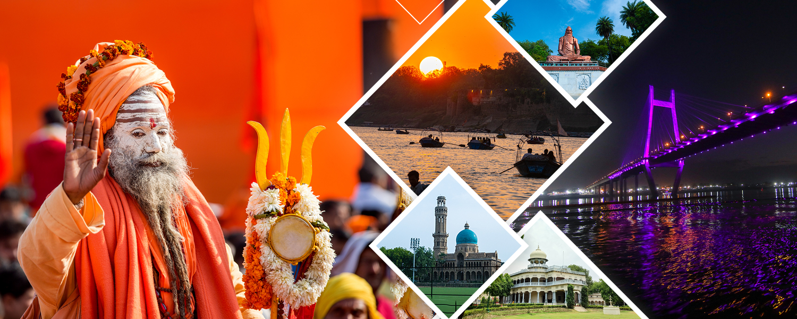
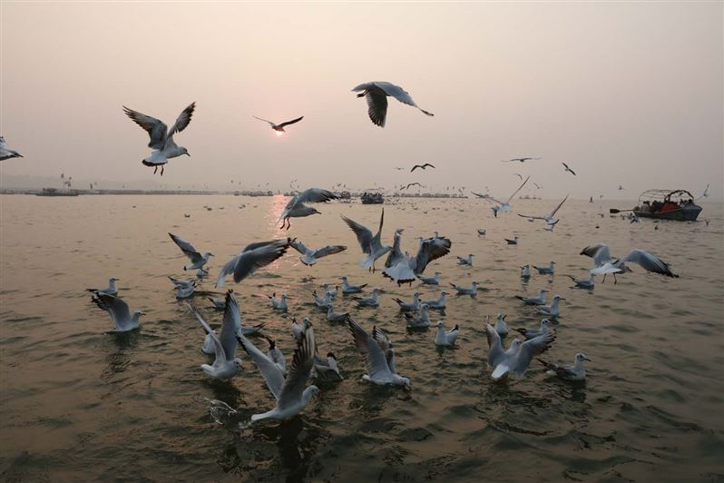
PRAYAGRAJ
Prayagraj, formerly known as Allahabad, is one of the most historically, culturally, and spiritually significant cities in India. Situated at the confluence of the Ganga, Yamuna, and the mythical Saraswati rivers, known collectively as the Triveni Sangam, Prayagraj has been a focal point of religious pilgrimage, intellectual discourse, and political importance since ancient times.
The city is renowned for its role in hosting the Kumbh Mela, the world's largest religious gathering, which attracts millions of devotees and tourists from across the globe. Prayagraj stands as a remarkable symbol of India's civilizational continuity, where history, spirituality, culture, and modernity intersect. From the sacred waters of the Triveni Sangam to the grandeur of Allahabad Fort and the intellectual legacy of its universities, the city embodies a unique confluence of past and present. It continues to inspire devotion, scholarship, and exploration, making it a city of eternal significance in India's socio-cultural and historical landscape.
Prayagraj has long been a cradle of culture and learning. The city has produced eminent poets, writers, and scholars, contributing significantly to Hindi and English literature. Allahabad University and other educational institutions have nurtured generations of thinkers, leaders, and policymakers. The city has also hosted several literary and cultural festivals, making it a vibrant center for arts, literature, and debate. Its historical ghats, colonial architecture, and monuments further reflect the city's rich cultural heritage.
In contemporary times, Prayagraj has evolved into a city that harmoniously blends tradition and modernity. It has witnessed infrastructural development, urban expansion, and economic growth while retaining its historical and spiritual essence. Modern amenities, transport facilities, and cultural initiatives make the city an attractive destination for both residents and tourists. The preservation of historical sites alongside urban modernization exemplifies Prayagraj's dynamic and progressive character.
Prayagraj has a rich and illustrious history dating back to Vedic times. It is mentioned in ancient scriptures as a center of learning and spirituality. The city witnessed the rule of great empires, including the Mauryas, Guptas, and Mughals. Emperor Akbar constructed the magnificent Allahabad Fort near the confluence, which stands as a testimony to the city's strategic and military significance. During the British colonial era, Prayagraj emerged as an important administrative and educational hub, with the establishment of Allahabad University, one of the oldest universities in India.
The spiritual aura of Prayagraj is unparalleled. The Triveni Sangam is considered a sacred site where devotees take ritualistic baths, believing it purifies the soul and absolves sins. The city is also home to several historic temples and ashrams, including the Hanuman Mandir, Alopi Devi Mandir, and the sacred Anand Bhawan, which is linked to the Nehru-Gandhi family. The Kumbh Mela, held every 12 years, symbolizes the city's enduring religious relevance, drawing millions of pilgrims, sadhus, and tourists from across the world.
The place attracts a large number of devotees and tourists on the daily basis. The most important places are:
Triveni Sangam: Triveni Sangam is a sacred confluence of three rivers - the Ganga, Yamuna, and the mythical Saraswati located in Prayagraj, Uttar Pradesh. It is considered one of the holiest pilgrimage sites in India. Millions of devotees come here to take a holy dip, especially during the Kumbh Mela, which is held every twelve years. The meeting of the rivers is unique as the clear water of the Ganga and the darker water of the Yamuna can be distinguished easily. Hindus believe that bathing at this confluence washes away sins and leads to salvation. Triveni Sangam is not only a spiritual center but also a symbol of India's cultural and historical heritage.
Bade Hanuman Ji Mandir: The Bade Hanuman Ji Temple, also known as the Lete Hue Hanuman Mandir, is one of the most famous and unique temples of Prayagraj, situated near the holy Triveni Sangam. The temple is dedicated to Lord Hanuman, who is believed to be the most powerful devotee of Lord Rama. What makes this temple truly unique is the idol of Lord Hanuman, which is about 20 feet long and placed in a reclining posture (lying down). This posture is rarely seen in Hanuman temples across India, which makes it very special. Devotees strongly believe that offering prayers here helps in removing obstacles, fulfilling wishes, and gaining strength and courage. The temple is always filled with devotees, especially on Tuesdays and Saturdays, which are considered auspicious days for worshiping Lord Hanuman. During the Kumbh Mela and Magh Mela, thousands of pilgrims from all over the country visit this temple after taking a dip in the Sangam. The spiritual atmosphere of the temple, along with its cultural significance, makes it an important religious landmark of Prayagraj. The Bade Hanuman Ji Temple stands as a symbol of faith, devotion, and divine power, attracting devotees and tourists alike throughout the year.
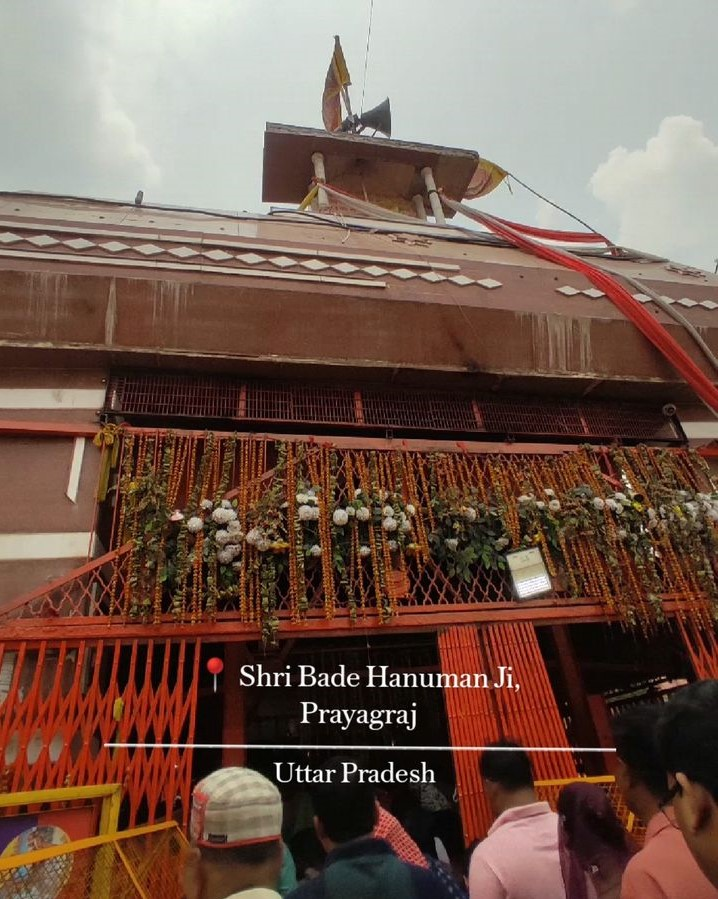
Allahabad Fort:The Allahabad Fort, also known as Prayagraj Fort, is a majestic historical monument built by the Mughal emperor Akbar in 1583 on the banks of the Yamuna River, near the Triveni Sangam in Prayagraj. The fort has three grand galleries, massive walls, and beautiful gateways that reflect the blend of Mughal and Hindu architectural styles. One of the most famous attractions inside the fort is the Ashoka Pillar, made of polished sandstone, which dates back to the 3rd century BCE and carries inscriptions from Emperor Ashoka's time. However, during special occasions like the Kumbh Mela, devotees and tourists get a chance to explore its religious spots. The Allahabad Fort is an iconic landmark that represents the rich cultural, architectural, and spiritual heritage of Prayagraj.
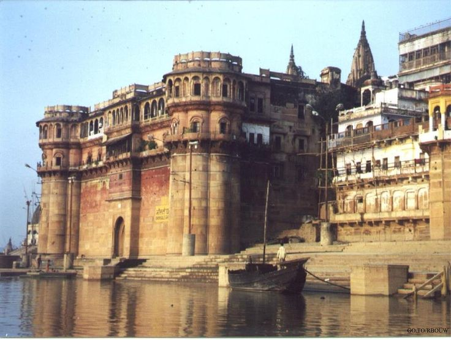
Anand Bhawan: Anand Bhavan is one of the most important historical landmarks in Prayagraj, closely connected with India's freedom struggle. It was the ancestral home of the Nehru family, one of the most influential political families in India. Originally built by Motilal Nehru in the 1930s, Anand Bhavan served as the residence of Motilal Nehru, Jawaharlal Nehru, and later became the home of Indira Gandhi. The building is designed in an elegant style with large rooms, beautiful wooden furniture, and well-maintained gardens, reflecting the lifestyle of one of India's most prominent families. Today, Anand Bhavan has been converted into a museum, showcasing personal belongings of the Nehru family, photographs, books, and other historical items that provide deep insight into India's struggle for independence.

Khushrao Bagh: Khusro Bagh is a historic walled garden in Prayagraj, famous for its Mughal architecture and beautiful tombs. Spread over a large area, this garden complex is dedicated to Prince Khusro, the eldest son of Emperor Jahangir. It contains three important sandstone mausoleums built in the Mughal style - the tomb of Prince Khusro, the tomb of his mother Shah Begum, and the tomb of his sister Nithar Begum. The intricate carvings, floral designs, and detailed latticework on the walls reflect the fine artistry of Mughal craftsmen. Khusro Bagh is not only a monument of architectural beauty but also an important part of India's history, as it reminds visitors of the tragic story of Prince Khusro, who was imprisoned and later killed due to political rivalry. Surrounded by lush greenery, the garden provides a peaceful atmosphere and is a popular place for both tourists and locals. Today, Khusro Bagh is recognized as a heritage site protected by the Archaeological Survey of India and continues to attract visitors who are interested in Mughal history, architecture, and culture.
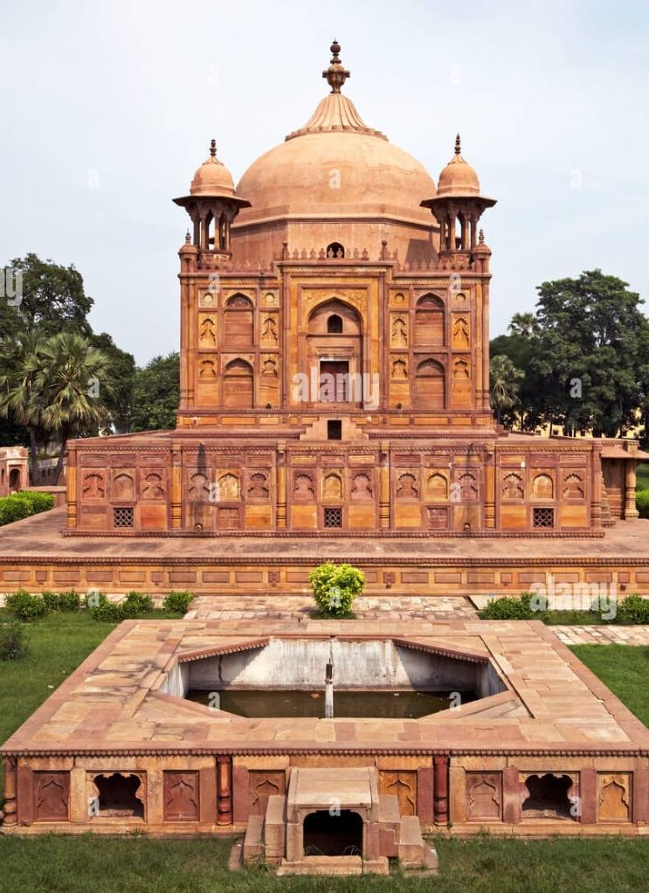
Akshayavat: The Akshayavat, also known as the Immortal Banyan Tree, is a sacred and legendary tree located within the Patalpuri Temple inside the Allahabad Fort in Prayagraj. The word "Akshayavat" means the tree that is indestructible or immortal. According to Hindu mythology, it is believed that this banyan tree has existed since ancient times and will continue to exist forever, even after the end of the world (Pralaya). Many legends are associated with it. One story says that Lord Rama visited this holy tree during his exile, and another belief is that people who committed suicide under this tree would attain salvation. During the rule of Emperor Akbar, the tree was enclosed within the fort, and later the British restricted free access to it, but now devotees can visit it during special occasions and fairs like the Kumbh Mela. The Akshayavat is considered a symbol of eternity, faith, and divine power. Pilgrims believe that visiting this tree and offering prayers brings blessings, protection, and liberation from the cycle of birth and death. Together with the Triveni Sangam, Bade Hanuman Ji Temple, and Alopi Devi Temple, the Akshayavat holds a very important place in the spiritual and cultural heritage of Prayagraj.
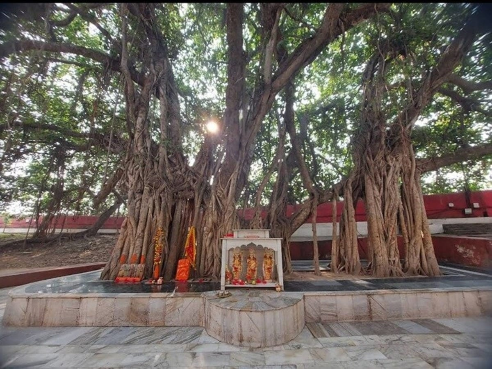
Best time to visit Prayagraj
The time to visit is in between October and March due to pleasent cool weather, making it ideal for sightseeing. These Months are also great because they host many festivals happens during this time like: Magh Mela and The Kumbh Mela in Prayagraj.
How to visit Prayagraj
To visit Prayagraj, you can fly to nearby airports like Gorakhpur or Lucknow, then take bus or Taxi to Prayagraj. You can also travel by train to Prayagraj Station or take a bus or private Taxi from major cities like Lucknow, Varanasi or Gorakhpur. Once you visit Prayagraj, use local transport like E- rickshaws, Auto-rickshaws or rapido ride are affordable and readily available for moving around the cities as per your comfort. Many important sites and temples are within walking distances of each other, making it a viable way to explore the city.
More significant locations around Prayagraj
There are few more beautiful places in Prayagraj like, Mankameswar Temple, All Saints Cathedral, Naag Vasuki Temple, Swaraj Bhawan and Allahabad museum. This places shows the history of Prayagraj through crumbling ruins of old houses and items which are placed in museum. If you want to know more about Prayagraj and about its history you should visit these places for sure. These places are nearest to Prayagraj so you can take auto-rickshaw or rapido-ride to reach there.
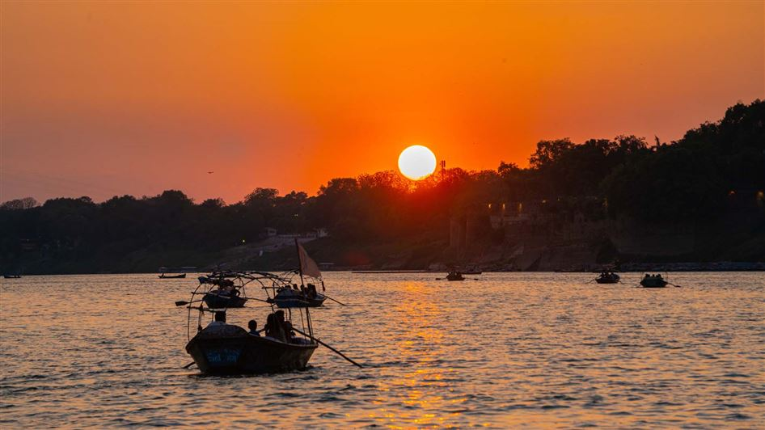
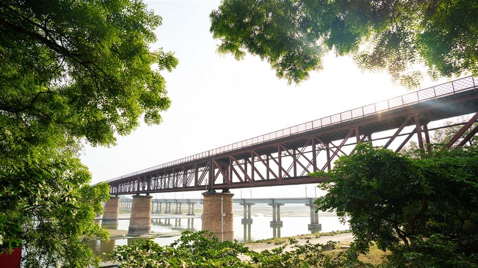
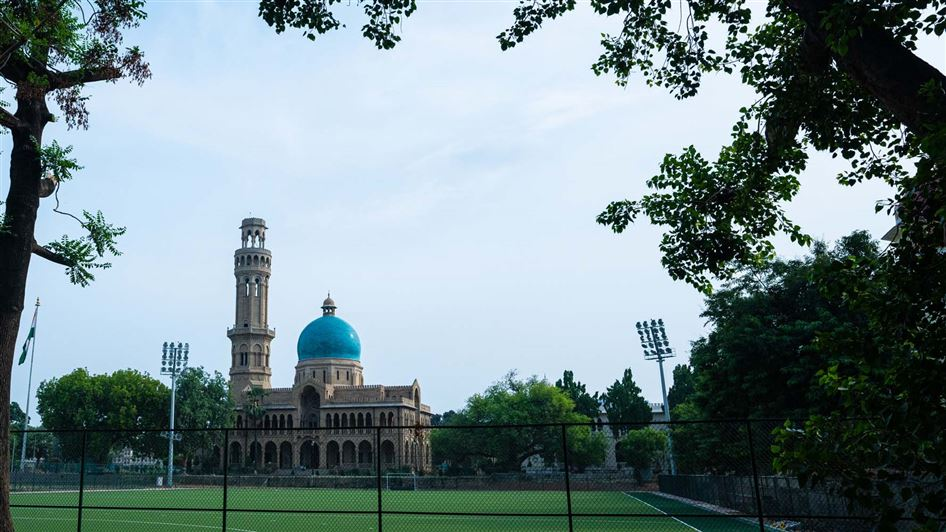
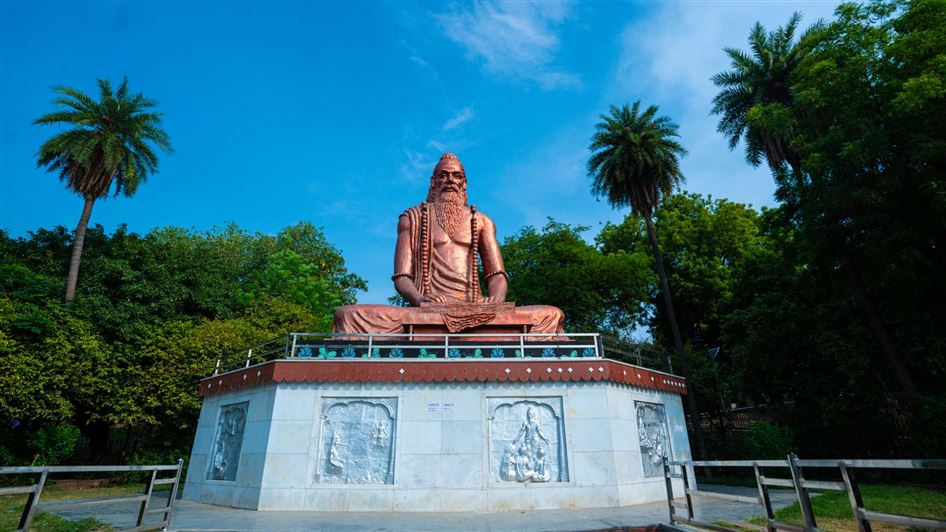
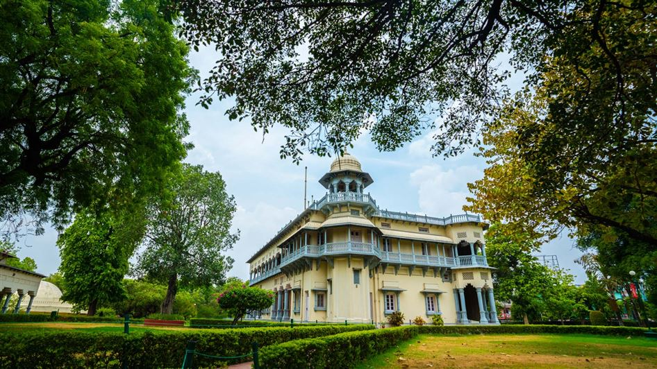
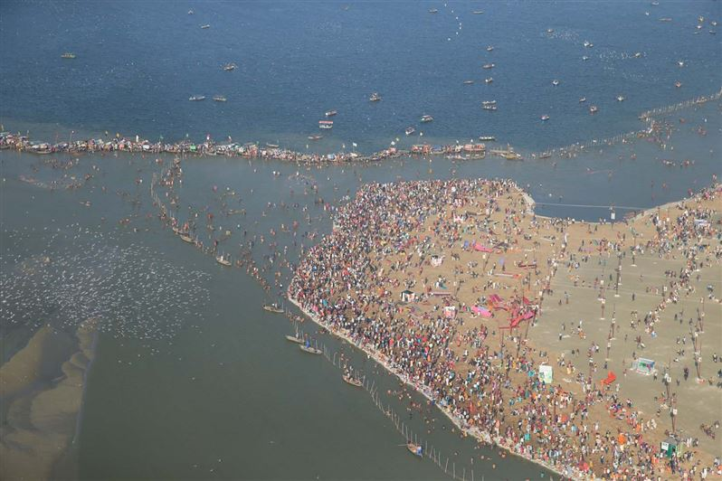
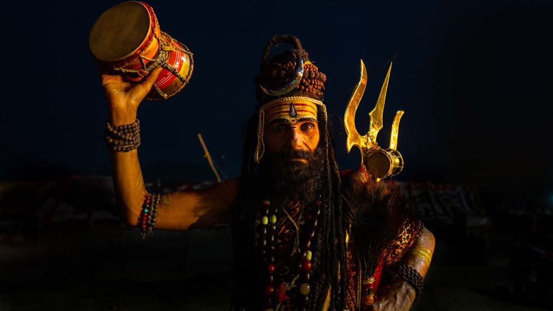
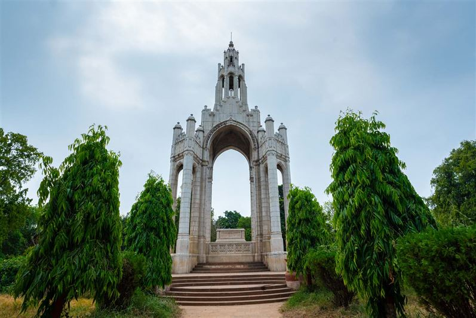
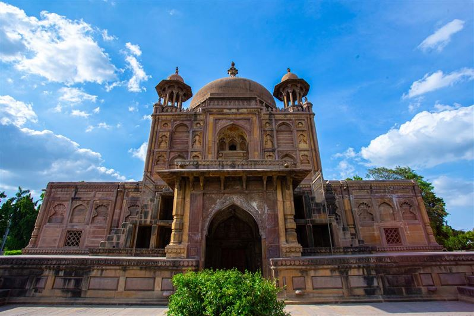
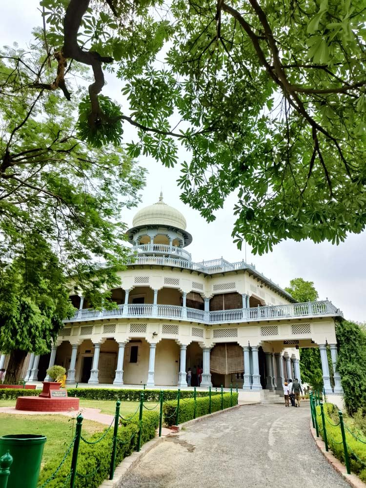